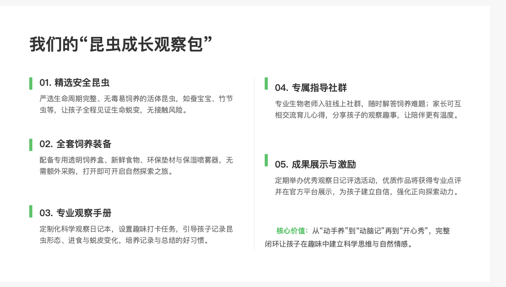

孩子三分钟热度
用每天10-15分钟的真实观察任务，练习持续投入和细节捕捉。
6-12岁亲子自然教育 / 科学观察 / 家庭陪伴
15天线上打卡，把昆虫饲养、观察日记、孩子表达和家长反思连成一个完整体验。孩子得到作品，家长得到一次真实的亲子互动复盘。
家长真正买的不是昆虫
用每天10-15分钟的真实观察任务，练习持续投入和细节捕捉。
用“事实、问题、感受、下一步”的结构，把看见的东西写出来。
喂食、清理、补救和复盘，让责任变成每天必须完成的小动作。
打卡会自然暴露替代、催促、纠正和边界不清，方便后续复盘。
昆虫成长观察包

15天交付流程
孩子给昆虫起名、搭建观察环境、完成第一次记录。
观察信号：家长是否忍不住接管。孩子喂食、检查、记录移动和进食变化。
观察信号：孩子忘记时，家长是修复还是惩罚。孩子记录蜕皮、不动、失败和不知道。
观察信号：家长能否忍受孩子慢和不完美。孩子整理观察日记，用1分钟讲述自己的昆虫故事。
观察信号：家长是否抢话、补充、纠正。观察 · 记录 · 复盘 · 展示
线下复盘沙龙
孩子的观察日记先被看见。
替代、催促、纠正、边界不清、情绪修复。
给每类家庭一个可马上使用的改善动作。
说明零散方法为什么解决不了长期控制对抗。
产品阶梯
观察日记PDF、家长陪伴卡、7天体验任务。
非活体礼包、15天线上打卡、每日任务、结营点评。
本地领取安全易养昆虫、食物、饲养说明和知情确认。
90分钟真实案例解析，承接家长训练营咨询。
合规边界
首期建议限30组
报名入口可先替换为微信二维码、问卷表单或小红书私信关键词。真实付款和自动化打卡，等首期验证完成后再升级。
这里替换为真实二维码或报名表单链接。
添加报名入口